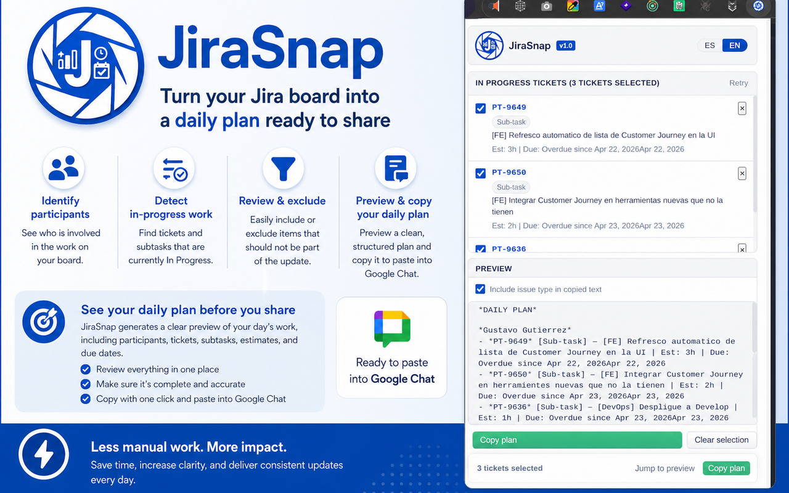

Propósito
Reducir el trabajo manual de revisar el board y redactar desde cero el plan del día.

Extensión para convertir trabajo en Jira en un plan diario claro
JiraSnap ayuda a identificar trabajo activo, participantes y subtareas en progreso dentro de un board de Jira, para luego generar un texto profesional que puedas revisar, copiar y pegar en canales como Google Chat.

Una herramienta de productividad para equipos que trabajan todos los días con Jira.
Reducir el trabajo manual de revisar el board y redactar desde cero el plan del día.
Equipos que reportan avance diario y organizan trabajo en historias, tareas y subtareas en progreso.
Un mensaje limpio, revisable y fácil de copiar hacia chats de trabajo o reportes rápidos.
Flujo resumido desde Jira hasta el mensaje final.
La extensión fue pensada para páginas alojadas en https://*.atlassian.net/*.
Usa el DOM visible, data-testid, etiquetas accesibles y lógica de respaldo para identificar el trabajo activo.
El popup permite refinar la selección antes de producir el texto que compartirás.
Se genera una salida amigable para Google Chat, con formato claro y sin necesidad de redactar todo manualmente.
| Elemento | Descripción |
|---|---|
| Dominio compatible | Tableros Jira en Atlassian Cloud. |
| Modo de extracción | Lectura local del contenido visible del board, sin depender del API REST en el MVP. |
| Preferencias | Idioma y opciones de salida guardadas localmente. |
| Experiencia de uso | Popup con acciones rápidas, vista previa, ayuda y sección informativa. |
Preparar rápidamente el mensaje de prioridades o actividades del día.
Especialmente útil cuando el trabajo real está distribuido dentro de historias o tareas padre.
Unifica el formato del reporte diario y reduce omisiones al revisar visualmente el board.